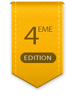

Web Event Lyon #4
La 4ème édition du Web Event Lyon se déroulera le 15 juin 2012 au centre des congrès de Lyon. L'évènement est co-organisé par La Ferme du Web et l'association La Cuisine du Web. Il est destiné à tous les acteurs et professionnels du web : Développeurs, entrepreneurs, graphistes, blogueurs, community manager ...
Au programme de cette édition : 1 journée complète de conférences, d'ateliers pratiques, barcamp, cliniques web et networking.
3 grands thèmes pour cette année:
- Web & Tech: Développement web, web mobile, système...
- Web & Design: Webdesign, intégration web...
- Web & Social: Web marketing, Community management...